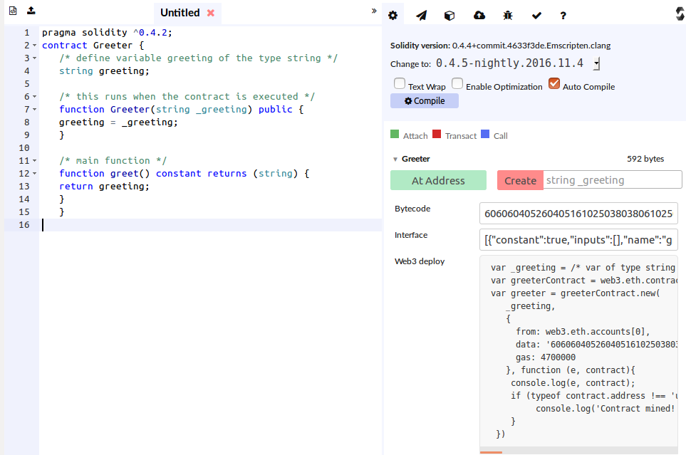
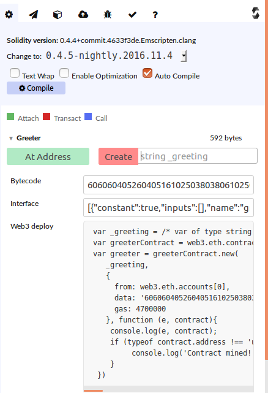

Introduction
These are simplified versions of the tutorials from the Ethereum website.
We will be writing the contracts in solidity , other languages are available,
but solidity is at the moment the most popular
We will be using the online solidity compiler, other IDEs are available , I will talk about Truffle this afternoon
I have picked this as it is quite simple when you are starting out
The online compiler has a runtime that allows some limited testing against an in memory blockchain in the browser, we shall see how to deploy to a real block chain later.
Solidity Compiler and Runtime
Open this in a browser, it starts with a default contract called Ballot, close the tab containing this.
Click the green new page icon to create a new contract and paste the greeter code given above into the tab.
Click on the tab label that says untitled, to rename the tab to Greeter.sol
You should then have something like this

At the right of the screen we can see the result of the compiled contract

If the bytecode box is empty or you see an error message this means that your contract hasn't compiled, or it is abstract
Typically you won't need to use the bytecode, but you will need to use the Interface and Web3 deploy information if you are deploying to a real block chain
The Solidity Language
If you know Javascript / Java / C then Solidity should look familiar, the langauge itself is not difficult, the work lies in how to create an app that is suitable for the block chain.
You will see that we have a variable called greeting of type string, and 2 functions.
The function greeter, having the same name as the function will run when the contract is created, similar to constructors in object oriented languages
The function greet provides the functionality of the contract.
The idea of the contract is to create a crypto currency.
It has a function HackCoin - the same name as the contract, this is a constructor (for those familiar with object oriented langauges).
This function is run only once, when the contract is created on the blockchain, and so is used to initialise the state of the contract.
We also have a mapping datatype as our storage this has the variable name balanceOf
This is used to link account numbers to the account balance
TThe contract has compiled, so we can create an instance of it on the in memory block chain by using the Create on the right of the screen,
You may briefly see a message saying "Waiting for transaction to be mined"

Then once the contract has been mined you will see details of the contract on the block chain
The points to note here are the address, the gas and the function button
The address field shows the address of the contract on the block chain and is the means by which you can reference the contract from other contracts or applications
The gas represents how much gas was needed to create the contract, the more code and storage the contract has, the higher the gas cost will be
This contract costs 152085 gas to create
The blue button labelled greet allows you to call the greet function, generally any functions in your contract will have a button here to allow you to call it.
What is odd here is that there is a value next to this button as if it has already been called, indeed if you click the button, it will return this same value.
This is because the greet function has been denoted as constant in this contract.
If you label a function as constant, you are telling the compiler that when this function runs it will not affect the state of the bloick chain, in effect the function is read only.
It is always worthwhile to decide which of your functions are read only and label them as constant where possible, constant functions cost less gas, and can just run on your local node, reducing network traffic.
The greet function costs 25943 gas to run.
Deploying the contract to a real block chain
So far we have deployed our contract to an in memory block chain, there are 2 ways to deploy to a real block chain
- Deploy from the online compiler to your own node (easiest)
- Deploy from your own node
To change the environment click on the black cube in the top right of the screen
This allows you to switch between the default JavaScript VM to a Web3 provider.
You need to specify the endpoint for your Web3 provider, if you have your local version of geth running the endpoint is http://localhost:8545
Try switching to this environment now and then create another example of the contract, this time it will take a few seconds for the contract to be mined.

mapping (address => uint) coinBalanceOf
so if we have address xyz and we want to set the balance to be 200, the syntax used is
coinBalanceOf[xyx]=200;
we also have an event called CoinTransfer specified, this is a way of getting callbacks on the block chain.
For example we can have what is callled a listener in an external program which will be triggered each time the event CoinTransfer happens.
The sendCoin function handles adjusting the accounts when we transfer coins. Note that since this changes the state of the blockchain, it is not marked as constant.
We also see the variable msg.sender this is the address of the account starting a transaction, in the case of the constructor this is the person creating the contract.
For the next part we need to unlock the default account, so first stop the geth node
exit
then restart it with the account unlocked
geth --datadir data --networkid 20161105 --ipcpath < path to ipc file> --rpc --rpcaddr=localhost --rpcport=8545 --rpccorsdomain "*" --unlock 0 console 2>geth.log
Lets create another account
personal.newAccount();
and transfer some ether between accounts
web3.eth.sendTransaction({from: eth.accounts[0], to: eth.accounts[1], value: web3.toWei(0.001, "ether")});
You will see a transsaction in the log file :
I1106 15:08:20.946243 eth/api.go:1185] Tx(0xea1e394c8f72d0178af7fbed1bb81832249ee59d741e9fb8fa2577407e6d4d74) to: 0x16552584bbdd996a8018480ac3b6bded7cc718b6
"0xea1e394c8f72d0178af7fbed1bb81832249ee59d741e9fb8fa2577407e6d4d74"
if it hasn't been mined, so we also need to start the miner
miner.start(1)
if we then check the balance of this second account we should see that it has some ether
web3.fromWei(web3.eth.getBalance(web3.eth.accounts[1]), "ether");
Deploying the contract from the console
Now we will deploy the contract we created earlier from the console.
You need to copy the statements from the Web3 deploy box at the right hand side of the online compiler
You should have some thing like this
var _greeting = /* var of type string here */ ;
var greeterContract = web3.eth.contract([{"constant":true,"inputs":[],"name":"greet","outputs":[{"name":"","type":"string"}],"payable":false,"type":"function"},{"inputs":[{"name":"_greeting","type":"string"}],"type":"constructor"}]);
var greeter = greeterContract.new(
_greeting,
{
from: web3.eth.accounts[0],
data: '6060604052604051610250380380610250833981016040528080518201919060200150505b8060006000509080519060200190828054600181600116156101000203166002900490600052602060002090601f016020900481019282601f10607157805160ff1916838001178555609f565b82800160010185558215609f579182015b82811115609e5782518260005055916020019190600101906082565b5b50905060c6919060aa565b8082111560c2576000818150600090555060010160aa565b5090565b50505b50610178806100d86000396000f360606040526000357c010000000000000000000000000000000000000000000000000000000090048063cfae32171461003c57610037565b610002565b346100025761004e60048050506100bc565b60405180806020018281038252838181518152602001915080519060200190808383829060006004602084601f0104600302600f01f150905090810190601f1680156100ae5780820380516001836020036101000a031916815260200191505b509250505060405180910390f35b602060405190810160405280600081526020015060006000508054600181600116156101000203166002900480601f0160208091040260200160405190810160405280929190818152602001828054600181600116156101000203166002900480156101695780601f1061013e57610100808354040283529160200191610169565b820191906000526020600020905b81548152906001019060200180831161014c57829003601f168201915b50505050509050610175565b9056',
gas: 4700000
}, function (e, contract){
console.log(e, contract);
if (typeof contract.address !== 'undefined') {
console.log('Contract mined! address: ' + contract.address + ' transactionHash: ' + contract.transactionHash);
}
})
You will need to edit the first line of this to provide the greeting parameter
e.g.
var _greeting = "hello" ;
Then paste all of that directly into the geth console and press enter
You will see a transaction in the log file
I0225 15:24:32.716083 eth/api.go:1065] Tx(0x02bcb678fb4488b24d19bc5e24b51e0504749b6001c6ff75d81c45e8489a6e08) created: 0xf882141d96776165a3078f4519a50fdfaf2bfced
and shortly a message will appear in the console
Contract mined! address: 0xf882141d96776165a3078f4519a50fdfaf2bfced transactionHash: 0x02bcb678fb4488b24d19bc5e24b51e0504749b6001c6ff75d81c45e8489a6e08
Our contract is now on the blockchain
To interact with it we need to send it a transaction, which we can do from the console
greeter.greet.call({from: web3.eth.accounts[0]});
You should receive the response "hello"
Note that because this is a constant function we can use call rather than sendTransaction
Resources
Source Code
Greeter Contract
Token Contract